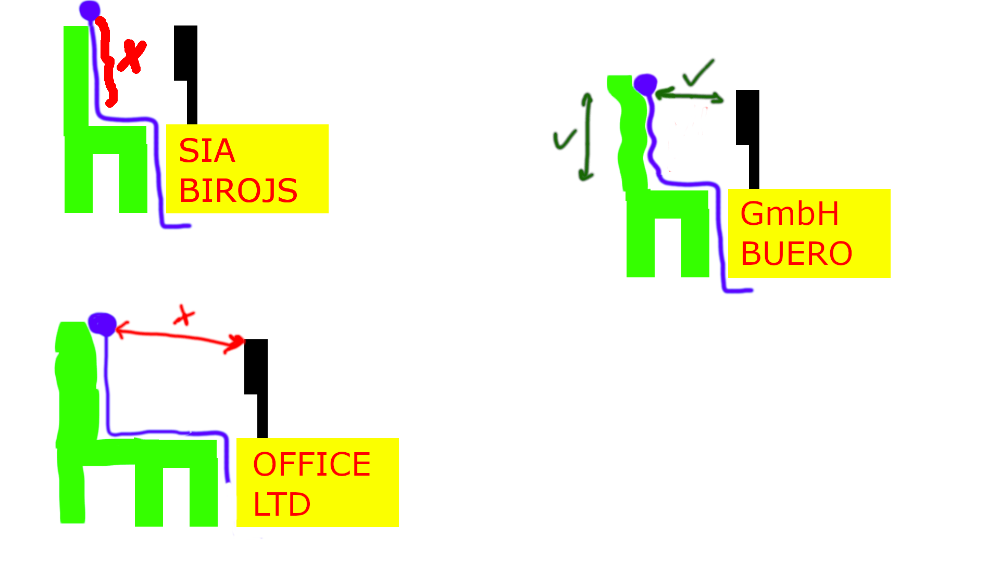

Balstoties uz Latvijas ergonomikas biedrības sniegto definīciju, ergonomika ir zinātnes nozare, kura skaidro cilvēka attiecības ar darbu. Tās uzdevums ir: “darba procesa un darba vides piemērošana cilvēka psihiskajām un fiziskajām iespējām, lai nodrošinātu efektīvu darbu, kas neizraisa draudus cilvēka veselībai un kuru var viegli izpildīt” [4]. Ergonomiku iedala trīs daļās: • slodzes ergonomika, piemēram, fiziska slodze, piespiedu pozas, vienveidīgas kustības, smagumu nešana u.tml.; • kognitīvā vai mentālā ergonomika, piemēram, mentālā slodze, u.tml.; • organizācijas ergonomika, piemēram, darba organizācija, procesi, atpūta u.tml.